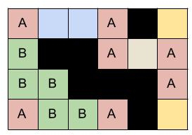

Suppose we were solving the crossword on paper. Then, for each word we will check if any of the palindromic positions can be filled (we consider two positions as "palindromic positions" if their distances to the closer word boundary (start or end) are equal). We will need to repeat this process until no more positions in the crossword can be filled. We can simulate this process by repeatedly trying to fill in one more position. The simulation ends when we cannot fill any character in the crossword.
Runtime analysis: In each successful pass over the crossword, at least one
character will be filled. There are at most $$$\mathbf{N} \times \mathbf{M}$$$ spots on the
crossword that need to be filled, which means at most $$$\mathbf{N} \times \mathbf{M}$$$
passes are needed to fill the crossword. Now, in each pass over the crossword,
we will be checking all the rows and columns once. We will need to divide each
row/column into its constituent words (using '#' as separators). Then for each
word, we will check the palindromic positions for a filled character and fill-in
the other position. This process will take $$$O(\mathbf{N} \times \mathbf{M})$$$ for checking
all rows and columns once. So, total runtime will be:
$$$O((\mathbf{N} \times \mathbf{M}) \times (\mathbf{N} \times \mathbf{M})) = O(\mathbf{N}^2 \times \mathbf{M}^2)$$$
Consider the following crossword:

This image shows the equivalence classes on a partially solved crossword. Now, if
we find these equivalence classes, we can fill all the cells for each class if
any of the cells in that class contains a character.
Now, to build equivalence classes, let us start by building a graph from our
crossword. We will consider all cells in the crossword (which are not '#') as
nodes of our graph and draw edges between palindromic positions. To generate
these edges, we can traverse over all rows and then over all columns of the
crossword. For each row/column, split it into its constituent words and add an
edge between the palindromic positions. Now, if two cells belong to the same
connected component, they are equivalent. We can find connected components
(equivalence classes) optimally from our constructed graph using any
graph search algorithm (such as DFS or BFS) or using DSU.
Runtime analysis: Any graph traversal algorithm will visit each cell only once
and a cell can be connected to at most two other cells. Then, each cell will be
visited at most once more when filling in equivalence classes. So, total runtime
will be:
$$$O(\mathbf{N} \times \mathbf{M})$$$